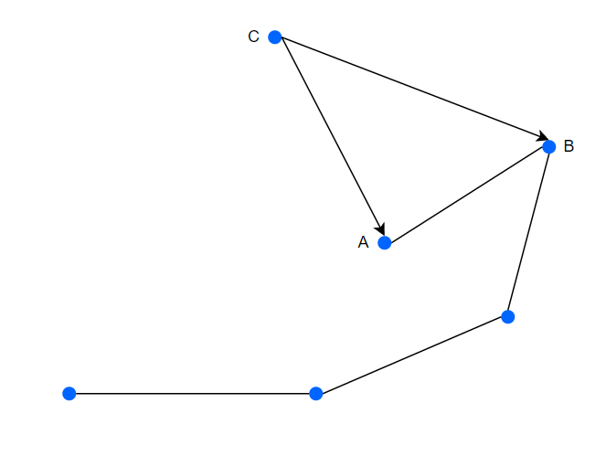

暴力
对于求凸包的题，暴力的方法，从最左下的点开始，旋转一条边，找所有的点中最早与这条边重合的，这样做时间复杂度为$\Theta(nm)$
Graham
考虑优化枚举顺序，使得每次不用重新判断每个点是否出现在这条线上，可以发现，一个凸包从左下角开始，逆时针依次枚举，路径上的点与左下角组成的直线角度逐渐增大，可以在选取了左下点后，以左下角与其他点组成的向量的角度大小作为排序基准，进行排序，以排序后的顺序作为枚举顺序。
使用一个栈存下路径上的点，对于新进入的点$C$，假设此时栈顶的元素为$A$，栈顶下一个点为$B$，点$C$此时一定进入栈中，但是点$A$是否出栈，即点$A$是否在$CB$的连线之内，若在，那么$A$显然不再路径上，$A$出栈。下图是一个$A$在$CB$内的示意图。

对于上面的情况，判断是否在凸包内可以采用向量叉乘，通过向量叉乘的$z$维的正负判断。叉乘计算方式为
当$z$轴均取0时，只保留值$a_i\cdot b_j-a_j\cdot b_i$，当$\vec{a}$沿逆时针方向转向$\vec{b}$时，$a_i\cdot b_j-a_j\cdot b_i > 0$，可以由极坐标证明这个关系。
那么判断条件变成计算$\vec{CA}\times\vec{CB}$，若值大于0，则证明点$A$需要出栈，若值等于0，则证明$\vec{CA}$和$\vec{CB}$共线，选择长度最长的那条边，才保证符合凸包的条件。
需要注意这个过程需要一直进行，直到找到一个$\vec{CA}$和$\vec{CB}<0$的点，再把点$C$插入栈中。
最后得到答案需要加上栈中最后一个点到起始点的距离。
排序效率为$\Theta(n\log n)$，扫描过程效率为$\Theta(n)$
Andrew
Andrew算法使用不同的排序方法，按照$x$轴坐标的大小排序，判断过程一致，需要注意，Andrew算法从左到右只能枚举凸包的一半，还需要从结束点枚举回开始点。注意第二次枚举的时候通过栈记录路径时，出栈不能把前一半凸包（在上述枚举条件下，为下凸包）的路径清理掉。